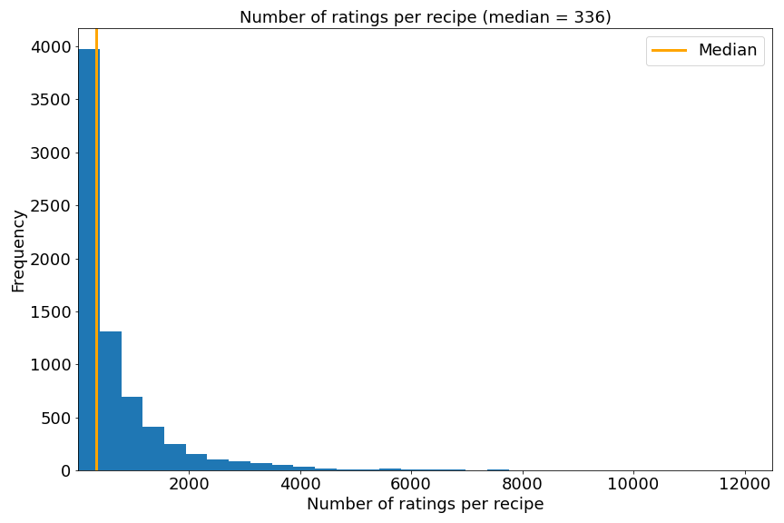
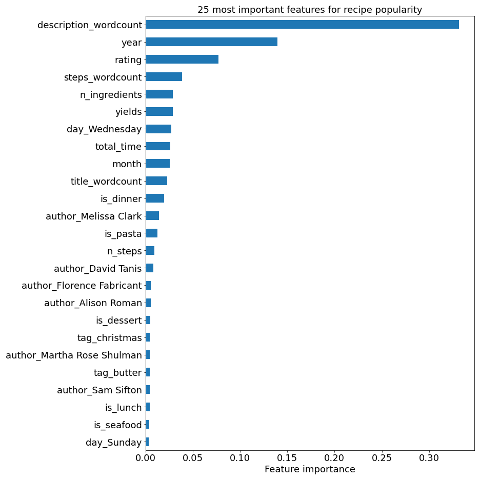
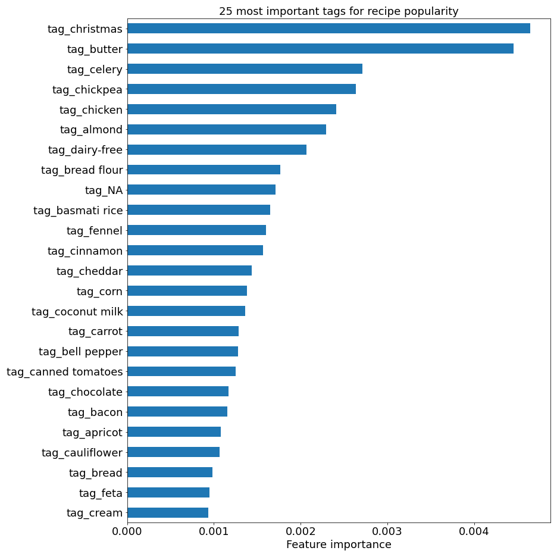

Predicting New York Times Cooking Recipe Popularity
More detailed information, including code and further analysis, can be found on my Github and slides for a presentation on this project can be found here.
Introduction
NYT Cooking is a subscription service and digital source for 20,000+ recipes from The New York Times. The site also includes how-to guides for home cooks of every level, weekly cooking newsletters, and recipe suggestions. Subscribers also have access to a recipe box where they can store their favorite recipes for future use. Recipes on the site include many common recipe features as well as links to related content and keywords that lead one to similar recipes. The website also has a 5 star rating system and the ability for users to leave comments related to their experience with the recipes.
In the digital age, online traffic and engagement are huge metrics of success for a website. This can be monitored in a number of different ways, including via total number of recipe ratings. Since NYT Cooking is a paid subscription service, the retention of existing, loyal subscribers and acquisition of new subscribers is key. This can only be accomplished by creating engaging content for users.
In order for NYT Cooking to continue their growing platform and ongoing success, they must maintain and increase overall site traffic and continue to attract new users. This project aims to:
- Determine how NYT Cooking can improve their recipe popularity and overall site traffic through web scraping of open access recipe data.
- Determine what characteristics of a recipe are most likely to increase the overall popularity, and thus lead to higher site traffic.
- Recommend changes that can be made to a recipe before posting.
In order to answer these questions, we'll build a classification model to predict whether a recipe will create higher than average site traffic based on several recipe features. We will use number of ratings as a proxy for popularity and site traffic.
Executive Summary
After generating 10,000 individual NYT Cooking URLs, recipe data was collected using the recipe_scrapers web scraping tool found on Github. After data cleaning and preprocessing, 7,627 recipes were left for analysis. The data collected from each recipe and used in the classification model include: Title of recipe, Author of recipe, Date of posting, Recipe description, Total time for recipe, Recipe yield, Number of steps, Text for all steps, Number of ingredients, Number of ratings for recipe, Recipe tags (keywords for main ingredients in each recipe), Cuisine type, Recipe categories (e.g., breakfast, lunch, dinner), and Recipe ratings.
These features were used to predict whether a recipe would be more popular, and thus produce more site traffic, than other recipes. A popular recipe is defined as a recipe with a rating count greater than the median number of ratings. Median was used in this case, as opposed to mean, because there are clearly outliers in our data and the target variable of number of ratings is heavily skewed. Outliers are important here, so we don't want to get rid of them.
The goal is to build a classification model to accurately predict whether or not a recipe is considered highly trafficked, and from this determine which features are the most important to recipe popularity. In total, 109 tags were used as features in our model. These included all tags that appeared in more than 15 recipes. Categorical features such as breakfast, lunch, dinner, quick, easy, etc. were also used as one-hot encoded model features.
Multiple classification models were developed with hyperparameter tuning in order to determine which classifier produced the most accurate model predictions. The classifiers included: LogisticRegression() KNeighborsClassifier(), RandomForestClassifier(), AdaBoostClassifier(), GradientBoostingClassifier(), and XGBoost.
A stacked model of the best performing models was also created. In the end, the best performing model was the GradientBoostingClassifier() which achieved an accuracy of 0.79 and a test data set ROC-AUC score of 0.86.
Conclusions and Recommendations
A benefit of the GradientBoostingClassifier() model performing the best is that it is straightforward to retrieve the importance of each feature in our model. The values below indicate how useful a particular feature is to making key decisions in the modeling process. A higher value indicates a more valuable feature within the model. Based on model performance, the top 25 most important general features and top 25 most important tags are listed below:
 - Rating itself is highly correlated to the number of ratings a recipe receives, meaning people are more likely to interact with a recipe they really enjoyed.
- Generally, wordier recipes tend to perform better and have a higher number of reviews, perhaps because these recipes include more detailed information and lead to better results.
- Comfort foods such as desserts and pastas perform better than other recipes and lead to more site traffic.
- Some authors have very dedicated followers. Melissa Clark (the "Queen of NYT Cooking"), David Tanis, and Alison Roman always produce very popular recipes.
- Subscribers enjoy christmas recipes, which isn't a surprise since NYT Cooking is known for their christmas cookie recipes.
- Recipes including the ingredients butter, chickpeas, almonds, and chicken produce higher than average site traffic.
- Dairy-free recipes or recipes including celery, cinnamon, and fennel have a negative correlation to rating count and do not typically perform well.